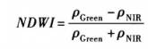
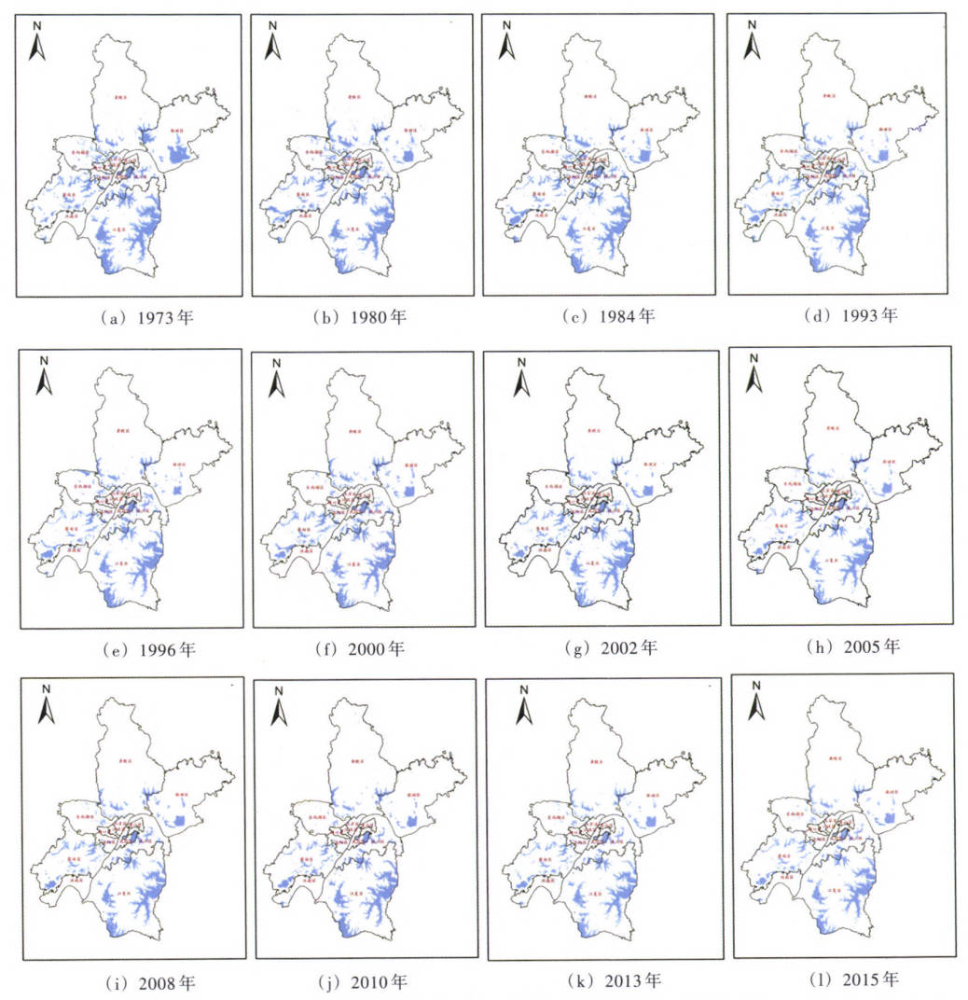
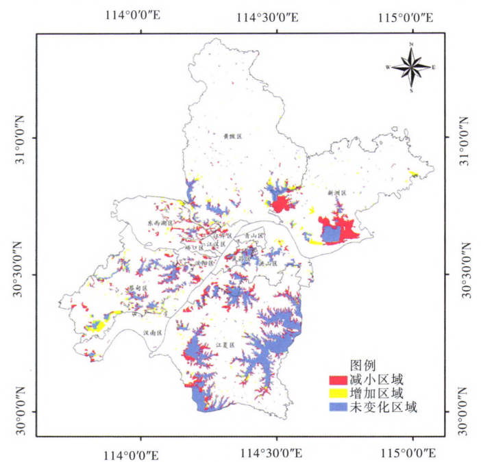

4 Policy
4.1 Summary
The urban heat island effect means that the overall or partial temperature of an urban area is higher than that of the surrounding area. The urban area with a higher temperature is surrounded or partially surrounded by suburbs with a lower temperature, just like an island protruding from the sea. Since this type of island represents a high-temperature urban area, that’s why it’s called the urban heat island effect. Wuhan, the largest city in central China, is located in the northern subtropical zone, with the Yangtze River and Han River running through it. Like other large cities in China, Wuhan has experienced rapid development and urbanization over the past few decades. The city’s temperature changes are well represented in the central region of China. The latest research shows that the intensity of Wuhan’s “urban heat island” has accelerated in recent years. According to recent data, the urban heat island effect has made the average temperature in central Wuhan 1.8-2.0°C higher than that in distant urban areas. In summer, the temperature in some parts of the central urban area is sometimes even 5.9°C higher than that in distant urban areas. In response to this situation, Wuhan has formulated a series of policies to reduce the impact of the urban heat island effect. One of them is the “Wuhan Lake Protection Regulations”, which elaborated on the protection methods of lakes and set severe punishment standards for behaviors that destroy lake ecology.
4.2 Application
In order to better protect the lake ecology of Wuhan and punish those with behaviors that destroy the ecology, we can use some methods to monitor which lakes are shrinking in size, and then go to the field to investigate the causes of lake destruction. There are many data source for us to choose from, including Landsat MSS, ETM+, TM, Landsat 8, GF1-WFV, GF6-WFV and other multi-source satellite image data (Jianwei Ma, 2017).
Remote sensing data processing method: using remote sensing processing software to perform geometric correction, georeferencing and other preprocessing on Landsat series and GF series satellite data; then combining different bands of images to obtain Wuhan Normalized Difference Water Index (NDWI), which is calculated as follows:

Then Convert the result raster images into vector graphics, calculate the lake water area in different years, and establish a spatial database of lakes in Wuhan. The proposed results are as follows:


when we get outputs like this, we can pay much attention to those lakes shrinking fast to corrospond to the action of protecting the lake of Wuhan. By doing this, city can acquire better absorting-heat ablity and Ultimately, it is benifitial to the decrease of UHI.
4.3 Refelection
At the policy level, although ensuring the integrity of the lake can meet the mitigation needs of urban heat island, population growth and urbanization will conflict with it. The process of urban development and expansion will definitely affect the ecology of the lake. In this process, increased competition for land from humans and waters is an urgent concern for authorities. In terms of research methods, when the research area is large, the single threshold method is often not effective in extracting small water bodies. And the post-processing workload is heavy because the pixel-based water body extraction is prone to “salt and pepper” phenomenon and the extracted patterns are too fragmented. Therefore, it may be considered to use the object-oriented segmentation of water body extraction algorithm to perform multi-scale segmentation of the image, since it fully considers the characteristics of the spectrum and shape of the ground objects, and it can divide the entire image into numerous homogeneous patches, which can effectively avoid the “salt and pepper phenomenon”. Ultimately, the extraction result is more complete, and the extraction of small water bodies is more effective.
4.4 Reference
Jianwei Ma, Shifeng Huang, Zongnan Xu. Satellite remote sensing of lake area in Wuhan from 1973 to 2015. Journal of Hydraulic Engineering,2017,48(8):903-913. DOI:10.13243/j.cnki.slxb.20170097.